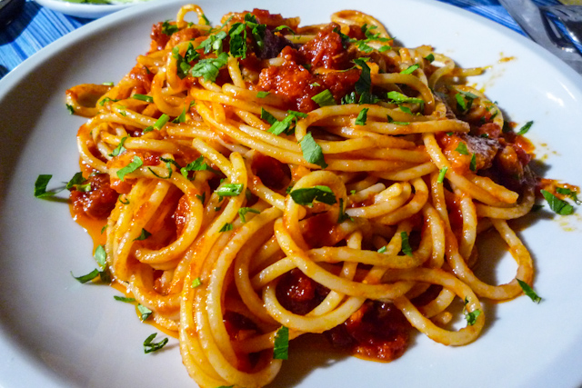
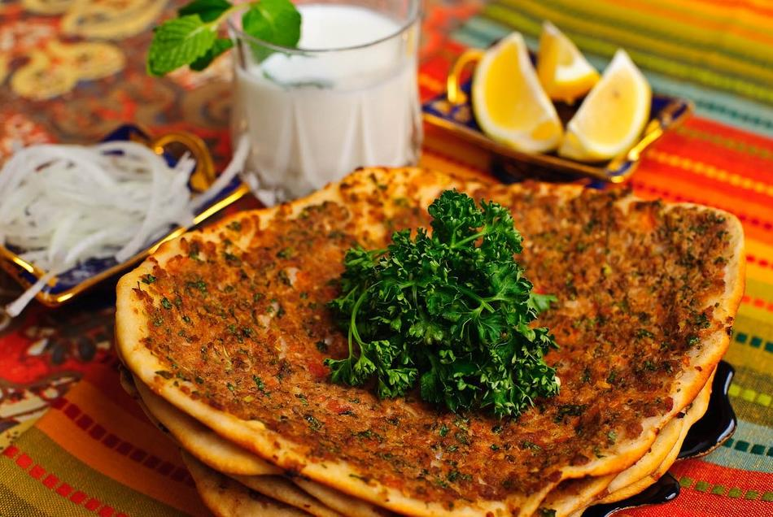
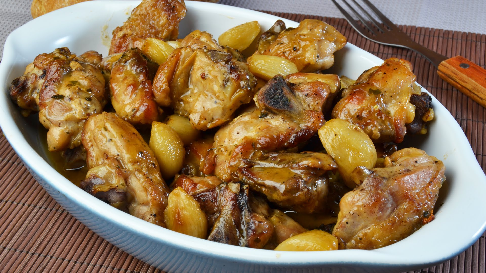
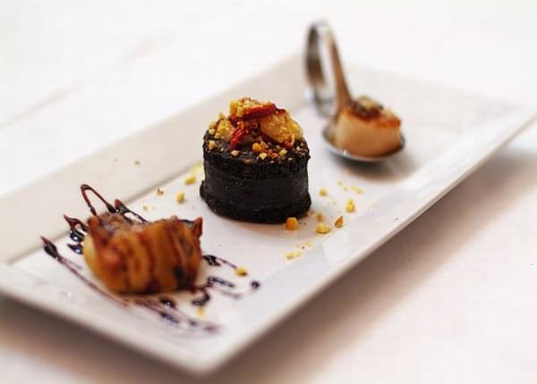

El tomate, la cebolla y la carne picada son los ingredientes principales para la elaboración de la salsa boloñesa, uno de los aderezos procedentes de Italia (en concreto de la región de Bolonia, de ahí su nombre) más utilizados para acompañar a los platos de pasta. No obstante, según la receta es posible encontrar también otros alimentos y especias. Ésta es la manera que nosotros te proponemos para elaborarla.
Como ingredientes necesitarás: 300 gramos de carne de añojo picada, una zanahoria, una lata de 1 kg de tomate entero, 1 cebolla y media grande, un diente de ajo, un vasito de vino tinto, una cucharada sopera de orégano, una cucharadita de azúcar, aceite de oliva virgen, sal y pimienta.
ELABORACIÓN :
lbahaca, aceite de oliva, queso Parmesano y piñones. Son los ingredientes básicos para la elaboración de una salsa de pesto clásica. Con el tiempo, han ido surgiendo distintas variantes (una muy común suele consistir en sustituir los piñones por otros frutos secos. El pistacho, por ejemplo, ofrece resultados sorprendentes y muy sabrosos). Pero la que hoy te ofrecemos en nuestra vídeo-receta semanal es la versión más tradicional, perfecta para acompañar tus platos de pasta.